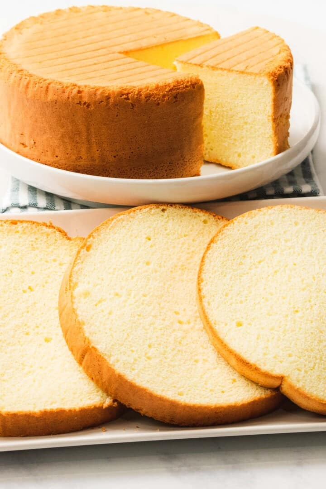

Easy Sponge Cake

This easy sponge cake recipe is passed down from my mom, a retired pastry chef, which I've simplified to make it easy for the home baker. It's an incredibly fluffy, soft, moist, and light cake which can be used with any frosting and filling.
Sponge cake is a light and airy cake that's that's leavened with beaten eggs instead of yeast. Sometimes baking powder is added for more volume. The beaten eggs act as a rising agent, giving the cake a fluffy, light texture.
There are several types of sponge cakes: chiffon cake, Swiss roll cake, castella cake, angel food cake, genoise cake, and Victoria sponge cake. Though similar ingredients are used, they vary slightly by technique and filling.
Ingredients
- Cake Flour
- Eggs
- Sugar
- Vegetable oil
- Baking Powder
Steps
- First, beat the egg whites to firm peaks. The tips should fall but the base of the meringue should hold its shape.
- Next, beat the egg yolks, sugar, salt, vanilla, honey, and water together until pale yellow and fluffy. Gradually increase to high speed for best results.
- Combine half the egg whites with the egg yolk mixture and gently fold being careful not to deflate any of the egg whites or egg yolk mixture.
- Sift in the cake flour and baking powder and fold gently. Next add the vegetable oil. Tip: To help incorporate the oil, first mix in a bit of batter with the oil. Then add to the remaining batter.
- Add the remaining half of the egg whites and gently fold together
- Pour into a six inch cake pan lined with parchment paper and bake at 350 degrees F until a toothpick comes out clean.